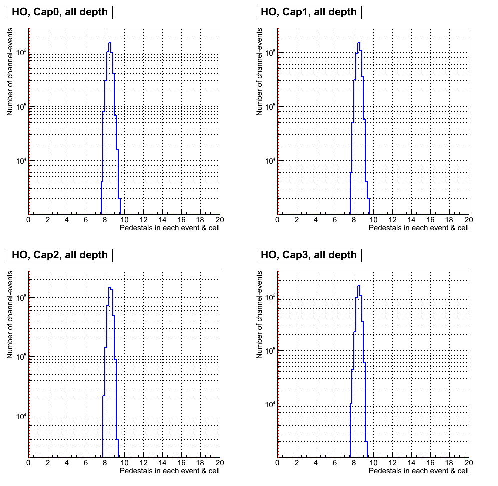
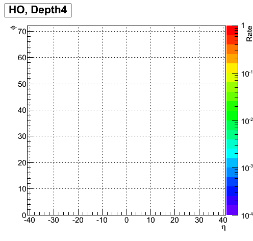
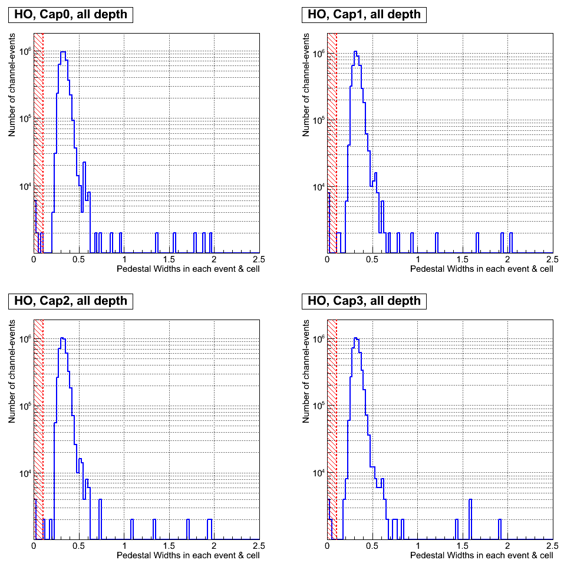
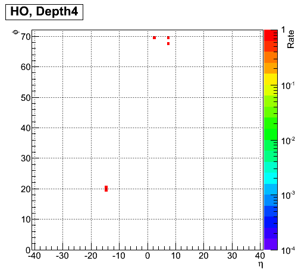
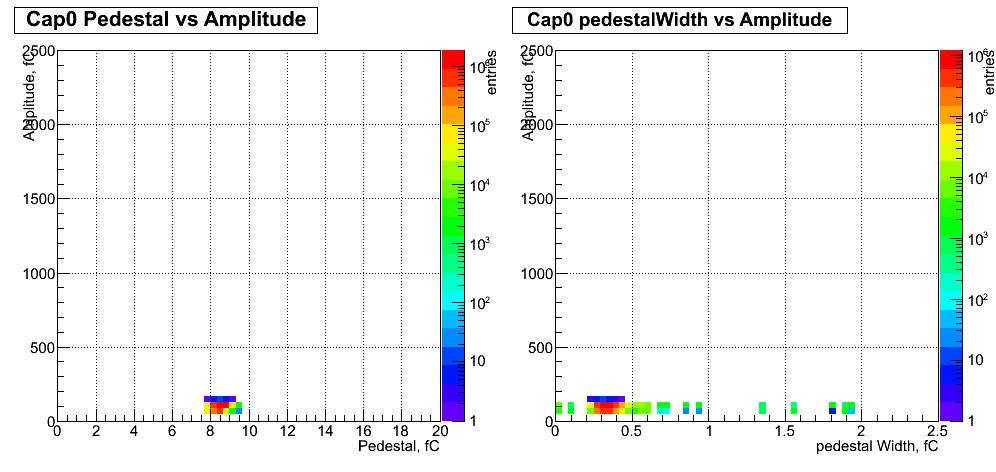

Pedestals for HO, RUN = 225529
1.Pm criterion: Pedestals for each CapID .
1.A. Pedestal distribution over all events, channels for each CapID and all depths.
Legend: Bins less 0.1 correpond to bad Pedestals

1.B. Rate of channels at very low Pedestals at least in one CapID for each depth.
Channel legend: white - good, other colour - bad.

2.pWm criterion: Pedestal Widths for each CapID .
2.A. Pedestal Widths distribution over all events, channels for each CapID and all depths.
Legend: Bins less 0.1 correpond to bad Pedestal Widths

2.B. Rate of channels at very low Pedestal Widths at least in one CapID for each depth.
Channel legend: white - good, other colour - bad.

3.Pedestal and pedestalWidths vs Amplitude .
3.A. Correlation of Pedestal(pedestalWidths) and Amplitude over all channels and events .
Legend: colour - entries
